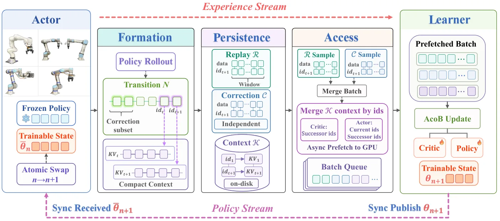
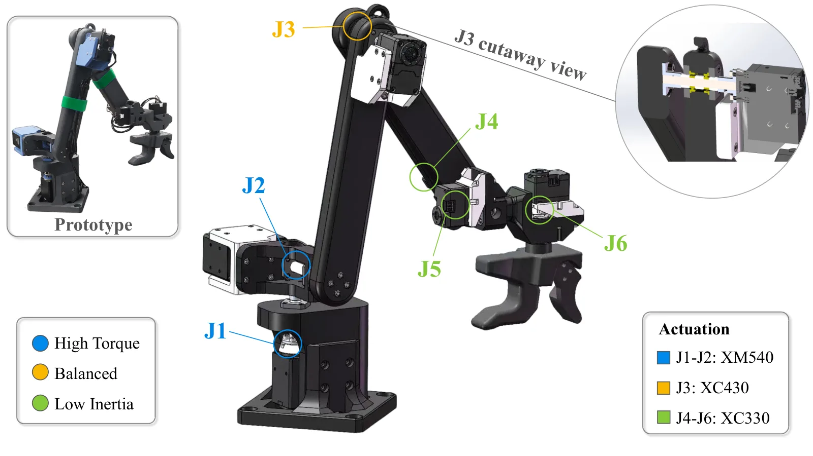
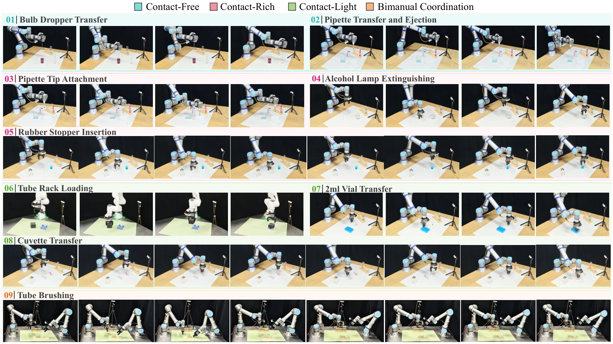
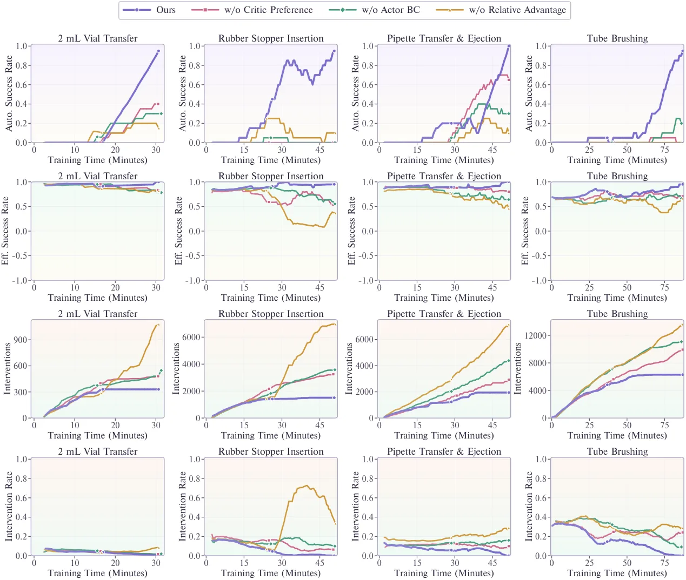

VLA-Precision：面向高效真实世界在线 RL 的非对称协同自举
VLA-Precision: Asymmetric Co-Bootstrapping for Efficient Real-World Online RL of Vision-Language-Action Models
方法通过行为学习、全局回报传播和局部偏好排序的不同时间尺度协同校准价值估计，再用 invariant-state decoupling 与按需流式推理支撑闭环在线 RL。它对可靠性研究的启发是把策略漂移、价值不确定性和系统吞吐放在同一训练环中。
作者、单位与技术谱系 · Research context
作者与单位
研究脉络
作者 affiliation 仍需逐名核验；没有公开证据时不推断导师/师生关系。
方法本质拆解 · What actually changed
是不是微调？
这是对预训练 VLA 的真实世界在线 RL post-training，动作专家和价值相关组件会更新，而不是只在测试时做几何优化。早期行为学习与后续 return/preference 校准构成多阶段训练。
有没有额外约束？
训练中使用 intervention-guided experience、参考策略正则化和多时间尺度的价值目标来抑制 policy drift。约束直接作用在动作更新和价值估计，而不是地图几何变量。
推理/后端到底做了什么？
ACoB-Stream 将 rollout actor 与 learner 解耦，按需传输经验和策略，避免大模型每个环节都同步。闭环执行仍由 VLA 产生 action chunk，并根据真实执行结果继续收集经验。
方法本质是什么？
它改变的是在线 RL 中 action advantage 的可信度：先用干预改善数据，再用全局回报和局部偏好共同校准价值，最后以参考策略约束更新。系统层的流式解耦把这条校准回路从吞吐瓶颈中释放出来。
真实执行经验 + 多时间尺度价值校准 + 参考策略约束 + 流式解耦，降低 VLA 在线 RL 的漂移与吞吐代价。

桥接价值Bridge
桥接价值
该工作把 VLA 的高层视觉语言能力与真实世界闭环控制中的价值校准、干预和执行延迟连接起来。它不是单纯换一个 policy backbone，而是同时处理策略质量和在线数据/系统吞吐。
方法与模块Method
方法摘要
ACoB 在早期使用 intervention-guided behavioral learning 改善策略并提升经验质量，随后用 global return propagation 与 local preference ranking 校准价值。ACoB-Stream 将 actor、experience、learner 和 policy 组成按需流式闭环，并采用 invariant-state decoupling 降低大 VLA 的同步开销。
可迁移模块
可迁移模块包括参考策略正则化的相对 action advantage、按不确定性选择人工/干预经验，以及把 rollout 与 learner 解耦的流式架构。对状态估计方向，可将类似的置信度分层机制用于异常观测筛选和风险敏感控制。

证据Evidence
关键证据与数字
官方 HTML 报告 9 个高精度化学任务、4 类任务和 4 种机器人形态上的 98.3% 平均成功率，单任务训练时间为 45.8 分钟。论文还报告 ACoB-Stream 最高 10.9× 吞吐/计算效率提升，27.6 秒 episode 的速度为 VLA 与 RL baseline 的 1.2× 和 1.8×；这些数字来自摘要与实验章节。
边界与下一步Limits & Next Step
边界与风险
实验集中于高精度化学操作，任务分布、奖励可观测性和人工干预机制可能不同于导航或状态估计。价值校准对 reward 设计、参考策略和执行延迟敏感，论文报告的跨 embodiment 泛化不能自动推出对未见传感器故障的鲁棒性。
下一步实验
可把 ACoB 的不确定性与故障检测器结合，在视觉遮挡、动作 chunk 冻结和传感器延迟下比较策略漂移与恢复时间。还应固定成功率目标，分别测量 learner 延迟、通信带宽、GPU 占用和真实交互样本数，以区分算法收益与系统工程收益。
{kind=link}

{kind=link}

{kind=link}
